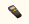
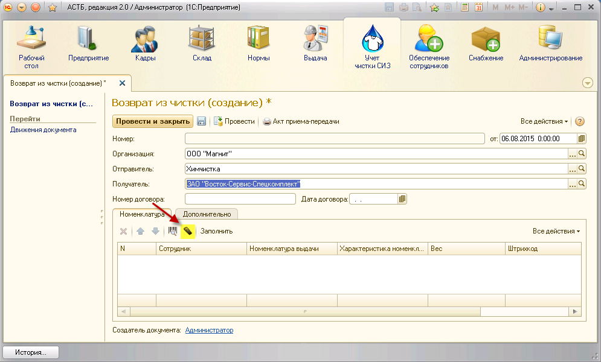
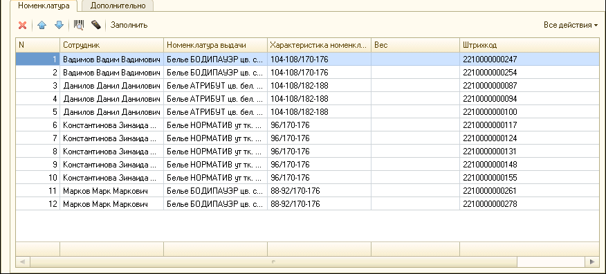
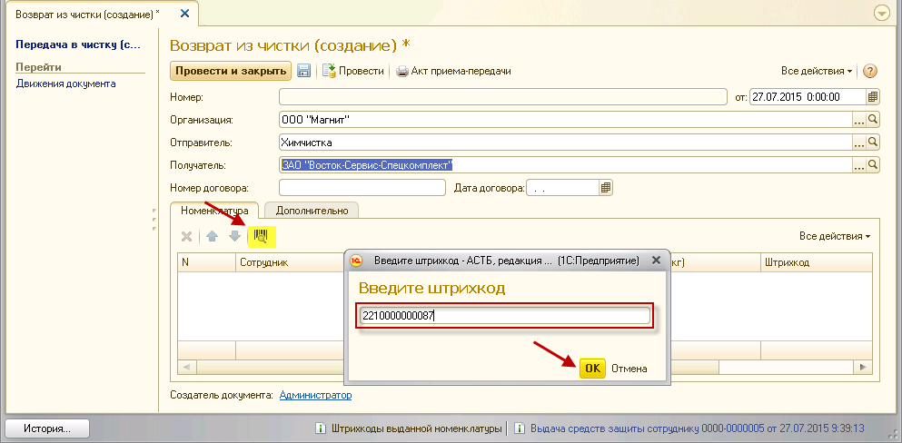
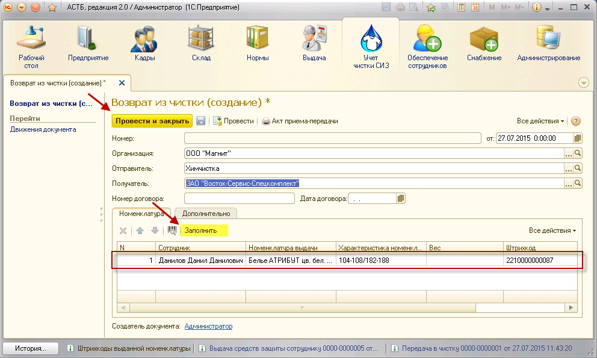

Когда организация, занимающаяся чисткой СИЗ, возвращает их, необходимо воспользоваться документом «Возврат из чистки» в разделе «Учет чистки СИЗ». Создайте новый документ, заполните необходимые реквизиты. В случае возврата СИЗ отправителем будет организация, которая возвращает СИЗ, а получателем – организация, которая осуществляет прием.
Для автоматического заполнения табличной части данными с терминала сбора данных (ТСД) в окне создания документа нажмите на кнопку  «Загрузить данные из ТСД», предварительно поместив терминал на базу, подключенную к рабочему компьютеру.

Табличная часть будет заполнена автоматически.

Сформированный список необходимо сверить с общим количеством доставленных СИЗ, чтобы в документе числилась вся номенклатура, возвращенная из чистки. Затем следует проверить сходится ли количество переданных в чистку СИЗ с количеством возвращенных СИЗ.
Примечание: в список не могут попасть штрих коды номенклатуры, которая не была отгружена в чистку. Таким оразом, проверка списка на наличие дублей не требуется.
Чтобы добавить позицию в документ, нажмите кнопку

Также можно нажать кнопку «Заполнить», и программа автоматически заполнит все, что в текущий момент числится в стирке по заданным реквизитам. Лишние позиции можно удалить, нажав на кнопку 

Примечание: чтобы в табличной части был заполнен вес, в свойствах номенклатуры выдачи, во вкладке «Данные для учета СИЗ», необходимо проставить значение «Вес для учета чистки (кг)».
После возврата СИЗ из чистки, их необходимо поместить в ящики (или другие места хранения СИЗ), привязанные к сотрудникам организации.